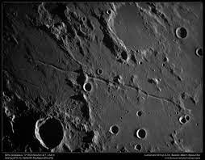

The Selenean summit is the highest point on the Moon, located along the north-eastern rim of Engel'gardt crater. It rises to an elevation of 10,786 meters above the lunar mean, which is nearly twenty percent taller than Earth's relative highest point, Mount Everest. The summit is located on the far side of the Moon relative to Earth. It has been imaged by the Lunar Reconnaissance Orbiter (LRO) and other spacecraft. The summit is a relatively young feature, having been formed by the impact of a large asteroid or comet only a few hundred million years ago. The Selenean summit is a valuable target for future lunar exploration. It is a unique geological feature that can provide insights into the Moon's formation and evolution. It is also a potential site for future human settlement, as it offers a relatively safe and stable environment. In addition to its scientific and practical importance, the Selenean summit is also a symbol of human achievement. It is the highest point on another world, and reaching it would be a truly remarkable feat.
Rima Ariadaeus is a linear rille on the Moon, located between Mare Vaporum and Mare Tranquillitatis. It is over 300 kilometers long and 5 kilometers wide, and has a depth of about 500 meters. Rima Ariadaeus is one of the most prominent linear rilles on the Moon. Rima Ariadaeus is thought to have formed when a section of the Moon's crust sank down between two parallel fault lines. This type of feature is called a graben. Rima Ariadaeus shows no trace of associated volcanism, which suggests that it was formed by pure faulting. The floor of Rima Ariadaeus is relatively smooth, with a few scattered craters. The walls of the rille are steep and rugged, and are marked by several scarps, which are cliffs or ridges that have formed along the fault lines. Rima Ariadaeus is a fascinating geological feature, and it is one of the most well-studied rilles on the Moon. It provides insights into the Moon's interior structure and tectonic processes.Rima Ariadaeus is also a beautiful sight. The long, straight rille cuts through the lunar landscape, creating a striking contrast between the dark mare basalts and the lighter highlands. Rima Ariadaeus is a reminder of the Moon's dynamic past.
Mare Tranquillitatis, also known as the Sea of Tranquility, is a lunar mare that sits within the Tranquillitatis basin on the Moon. It is the first location on another celestial body to be visited by humans. Mare Tranquillitatis is a relatively smooth plain, with a few scattered craters and mountains.The Tranquillitatis basin is thought to have been formed by a large impact in the Moon's early history, likely more than 3.9 billion years ago. The impact created a crater that was about 1,400 kilometers wide and 8 kilometers deep. Over time, lava flowed into the crater, filling it and creating the mare. Mare Tranquillitatis is a popular destination for lunar exploration. It is relatively flat and smooth, making it a good place to land spacecraft. It is also relatively safe from the harmful radiation that bombards the Moon's surface. In 1969, Apollo 11 landed on Mare Tranquillitatis, becoming the first crewed mission to land on another celestial body. Neil Armstrong and Buzz Aldrin spent two and a half hours on the Moon, collecting samples and conducting experiments. Mare Tranquillitatis is a special place in human history. It is the place where humanity first took its first steps on another world. It is a reminder of our potential and our ability to achieve great things.
Mons Pico is a solitary lunar mountain that lies in the northern part of the Mare Imbrium basin, to the south of the dark-floored crater Plato and on the southern rim of a ghost crater. It is a very reflective and bright object, and forms an elongated feature with a length of 25 kilometers (oriented northwest-southeast) and a width of 15 km. The peak rises to a height of 2.4 kilometers, comparable to the maximum altitude of the Montes Teneriffe. Mons Pico is thought to have formed as part of the inner ring of the Imbrium basin, which was created by a massive impact event billions of years ago. The mountain is made up of highly reflective anorthosite rock, which is why it appears so bright. Mons Pico has been featured in several works of science fiction, including the novels Blast Off at Woomera by Hugh Walters and Earthlight by Arthur C. Clarke. Mons Pico is a fascinating and mysterious object, and it is one of the most prominent mountains on the Moon. It is a reminder of the violent and chaotic history of our celestial neighbor.
Mons Hadley is a massif in the northern portion of the Montes Apenninus, a range in the northern hemisphere of the Moon. It has a height of 4.6 kilometers (2.8 miles) above the adjacent plain and a maximum diameter of 25 kilometers (15.5 miles) at the base. Mons Hadley is a relatively young feature, having formed less than a billion years ago. It is thought to have been formed by a series of volcanic eruptions that occurred along a fault line. The massif is made up of a variety of volcanic rocks, including basalt, andesite, and pyroclastic deposits. Mons Hadley is located near the Apollo 15 landing site. The astronauts on this mission explored the lower slopes of Mons Hadley Delta, the smaller massif to the south. They collected a variety of samples from the area, including rocks that are thought to be some of the oldest on the Moon. Mons Hadley is a significant feature on the Moon because it provides scientists with a unique opportunity to study the Moon's volcanic history. The massif is also a valuable source of information about the Moon's composition and evolution.Mons Hadley is a fascinating and important feature on the Moon. It is a reminder of the Moon's dynamic past and a valuable resource for scientists who are studying our celestial neighbor.
Schroter's Valley, also known as Vallis Schröteri, is a sinuous valley or rille on the surface of the Moon. It is located on a rise of continental ground, sometimes called the Aristarchus plateau, that is surrounded by the Oceanus Procellarum to the south and west and the Mare Imbrium to the northwest. At the southern edge of this rise are the craters Aristarchus and Herodotus.Schroter's Valley is the largest sinuous rille on the Moon. It is about 250 kilometers long and 10 kilometers wide, and it winds its way across the Aristarchus plateau in a series of loops and bends. The valley is thought to have been formed by lava flows that erupted from a series of fissures in the plateau. The valley is named after the German astronomer Johann Hieronymus Schröter, who first observed it in the late 18th century. Schröter was fascinated by the valley, and he wrote extensively about it in his notebooks. He speculated that the valley might have been formed by a river on the Moon, or by a giant worm that had burrowed its way across the surface. Scientists now believe that Schroter's Valley was formed by lava flows. The valley is filled with a dark material that is thought to be volcanic ash and debris. The ash and debris have been smoothed out by the flow of lava, giving the valley its characteristic sinuous appearance. Schroter's Valley is a fascinating and mysterious feature on the Moon. It is a reminder of the Moon's volcanic past, and it is a valuable source of information for scientists who are studying the Moon's formation and evolution.